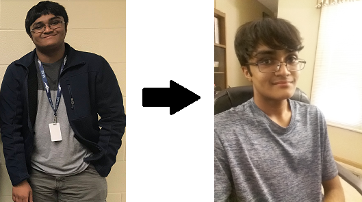

About
I'm an IB student at Wichita High School East who likes coding stuff on his laptop.
- I was introduced to CS in 9th grade in an intro CS class. Since then, I completed my school's CS pathway, learning Python and Java along the way. With my senior still underway, I plan on challenging myself by learning more about CS through algorithmic programming and app development.
- A recent hobby of mine is competitive programming, with Codeforces as my go-to competition site. I also enjoy working out, swimming (back when COVID-19 wasn't a thing), playing the piano, and listening to a lot of Vocaloid.
- The left part of the image is me as a sophmore (back when greens and exercise were foreign to me). The right is me as a senior (after swim season, bitter melon, and a passionate hatred of sweets):
- 